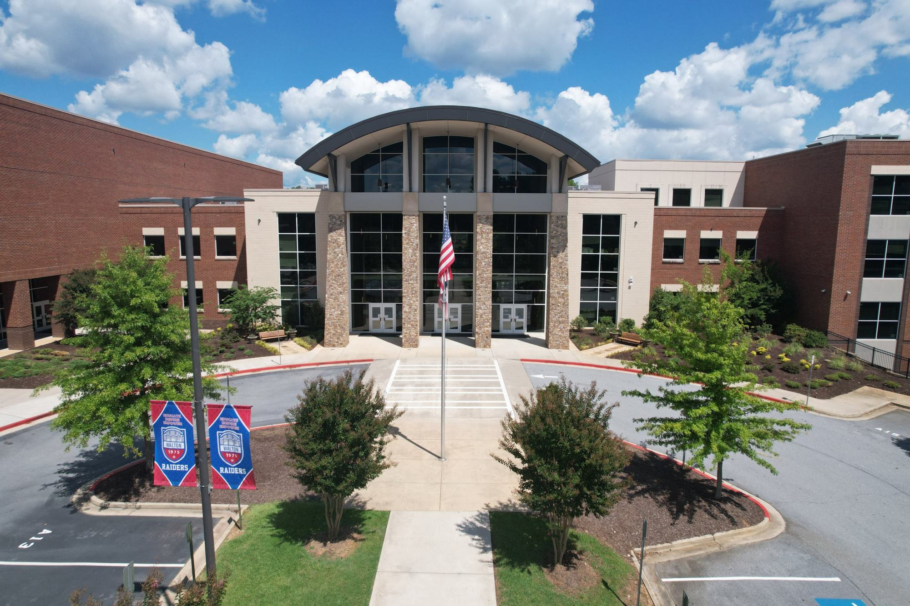

Walton STEM Academy is a four-year program at Walton High School in Marietta, Georgia. Students build their curiosity in science, technology, engineering, and math, and the confidence to use it.
A new Computer Science pathway
Beginning with the next STEM cohort, students can explore computing through a rigorous four-year sequence that builds skills in computational thinking, programming, problem-solving, cybersecurity, and emerging technologies.
The pathway is designed for students who are curious about technology and enjoy figuring out how things work. No prior programming experience is required, only curiosity, persistence, and a willingness to learn.
Four pathways
Advanced Mathematics and Science
Description to come from the Pathways page.
Biomedical Sciences
Description to come from the Pathways page.
Engineering
Description to come from the Pathways page.
Computer Science
Description to come from the Pathways page.
Application timeline
- Applications due to Walton High School
- December 18, 2026
- Students outside CCSD submit report cards
- January 8, 2027
- Admission decisions mailed to applicants
- February 5, 2027
- FAQ Night, 5:30–6:30 p.m.
- February 25, 2027
- Intent letters due from accepted students
- March 1, 2027
Recent student work
RoboLympics
This October, the Sophomore Engineering Class of 2028 competed in RoboLympics. In a series of events, teams designed robots to meet specific requirements using input and output sensors and their VEX kits. The events ended with Bot-Bot Golf, where the robots played a five-hole course throughout Walton.
Congratulations to Mason, Ryan G., Thad, and Samuel, whose robot posted a low score of 33.
Our mission
To foster student curiosity in science, technology, math, and engineering, to cultivate joy in learning, and to build the confidence to engage as ethical leaders capable of addressing the world’s most significant issues.
Statements of purpose
- Develop the interpersonal, communication, research, and technical skills needed to compete in a changing global society.
- Establish high academic, social, and ethical expectations.
- Foster mastery of both knowledge and skills through innovative resources and authentic experiences.
- Collaborate and cooperate locally and globally within the STEM community.
- Build partnerships with community stakeholders that strengthen the program and enhance students’ lives.